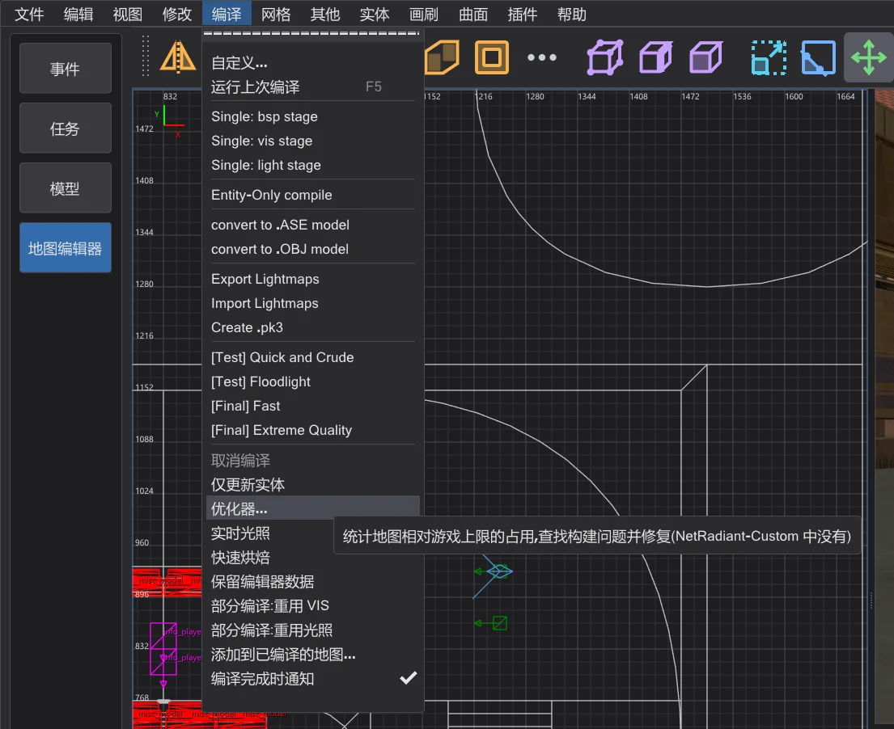
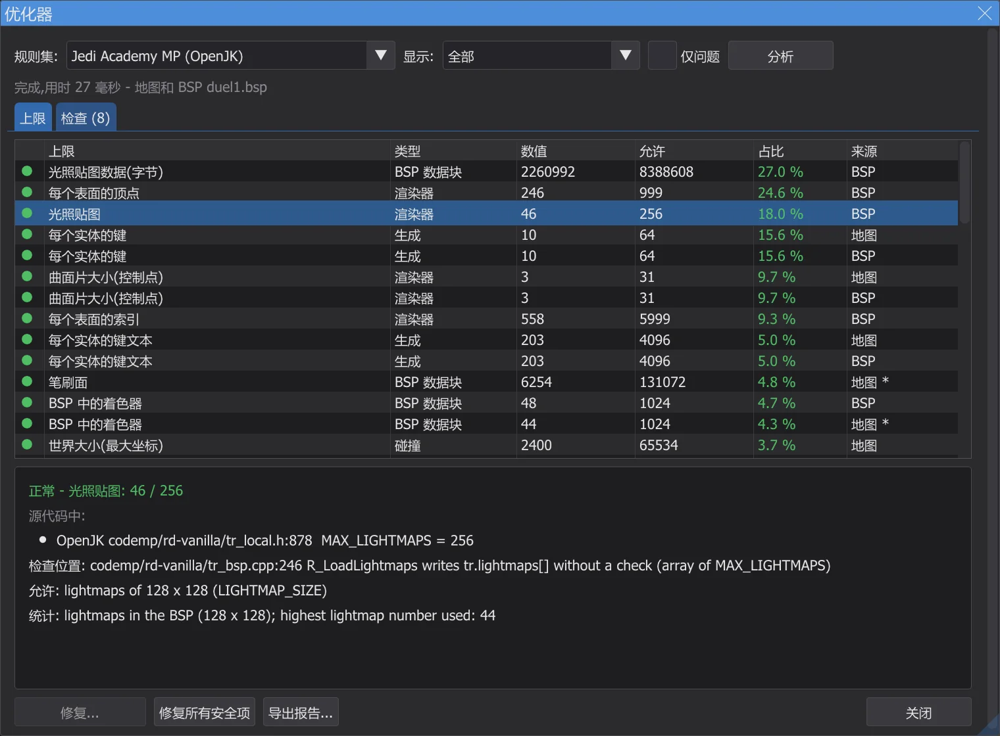
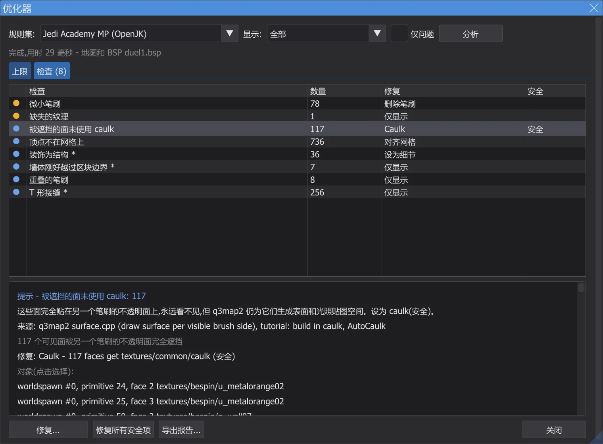
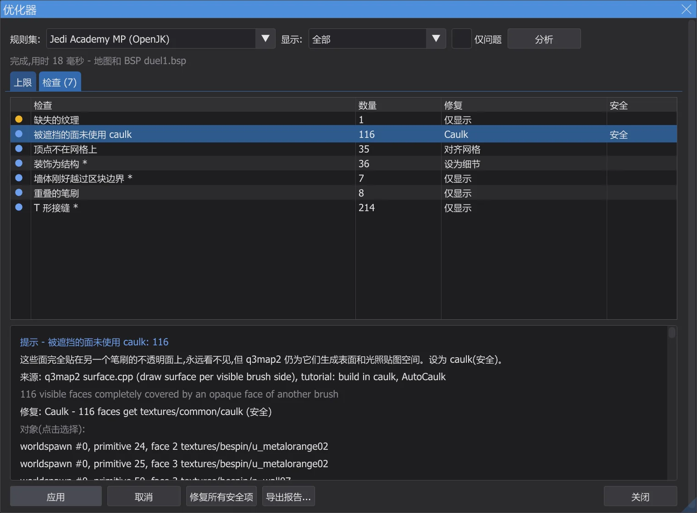
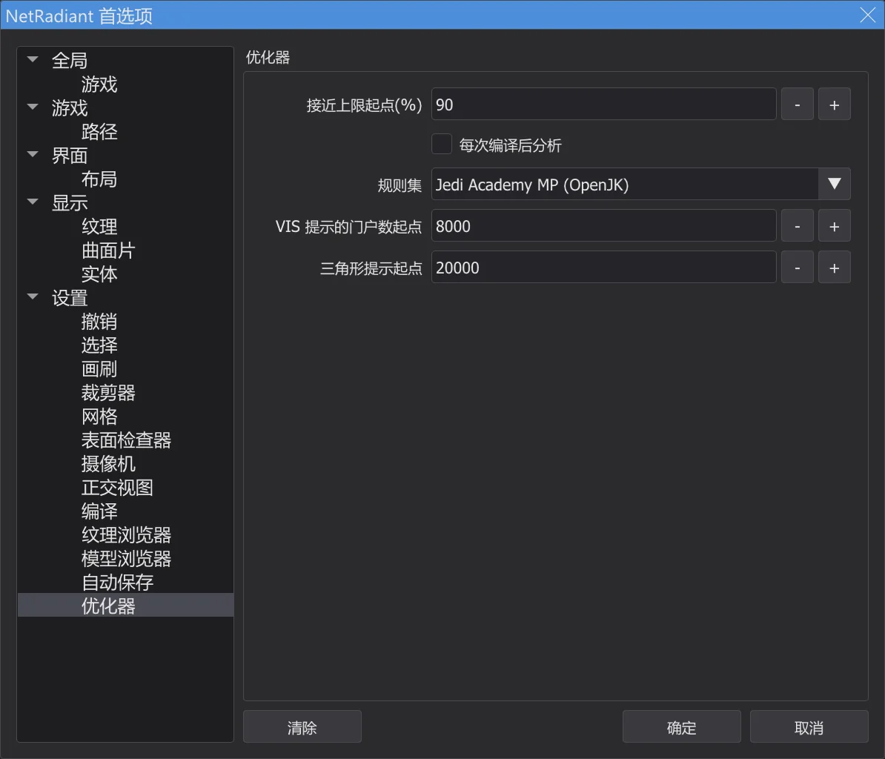

地图编辑器:优化器与限制
编译 > 优化器 把地图的用量与 Jedi Academy、Movie Duels 和 Jedi Outcast 的每一项限制进行比较(每项限制都取自引擎源码),查找泄漏、未用 caulk 处理的隐藏面、碰撞平面过多的曲面片等编译问题,并能一键修复其中许多问题。
打开优化器#

- 1
编译 > 优化器 打开 优化器 窗口,并在后台分析地图——即使是最大的地图也可以;分析期间编辑器仍可正常使用。结束时控制台会显示摘要。
- 2
规则集: 选择要使用的限制:自动 采用编辑器当前使用的游戏(Jedi Academy、Movie Duels 或 Jedi Outcast);也可以选择 Jedi Academy 多人模式。
- 3
如果地图已编译(见 地图编辑器:编译地图)或是作为已编译地图打开的(地图编辑器:打开并修改已完成的地图),也会一并分析 .bsp:光照网格、光照贴图、可见性、每个视角的三角形数,以及上次 BSP 阶段的泄漏线。没有 .bsp 时只统计地图本身。
- 4
在 首选项 的 优化器 页中,可以让优化器在每次编译后自动运行;只有发现问题时才会打开窗口。
限制#

- 正常——远低于限制。接近——达到限制的 90%(可调)。超出——超出了游戏强制执行的限制:地图无法加载、崩溃或丢失内容。
- 提示——.bsp 文件的格式限制(
qfiles.h中的MAX_MAP_*),引擎和 q3map2 都不会检查。Raven 自己的地图就超出了其中好几项,所以优化器从不把它们判为超出,只作提示。 - 带 * 的数值是估算值(例如生成后仍保留的实体数,或一个模型的开销)。来源 列表示该数值是在地图中还是在 .bsp 中统计的。
- 单击某项限制会选中地图中占用最多的对象,并让各视图居中显示它们。
code/,多人 codemp/),Movie Duels 取自 Movie Duels 的源码,Jedi Outcast 取自带 JK2_MODE 的 OpenJK 和 codeJK2/。即使某个模组提高了限制,优化器仍按更严格的原版值检查(例如曲面片平面按 2048 而不是 4096)。本页末尾的表格列出了每项限制所在的文件和行号;测试 karte_grenzen 会再次从源码中读取这些行。检查与修复#

- 1
单击某个检查结果会选中相关对象,并让 2D 视图和摄像机居中显示它们。
- 2
修复 显示将要发生的更改;应用 执行更改。每次修复都是 撤销 中的一步,修复后会重新统计地图——该检查结果会消失或减少。

应用修复之前的预览。 - 3
修复所有安全项 只应用标为 安全 的修复(这些修复不会改变地图的外观或玩法),并合并为一个撤销步骤。
- 4
设置 worldspawn 键的修复(光照网格、光照贴图)要在下次编译后才生效,控制台会给出提示。导出报告 会把全部内容连同来源写入一个文本文件。

| 检查 | 含义 | 修复 | 安全 |
|---|---|---|---|
| 泄漏 | 地图没有封闭:q3map2 找到了从实体通向虚空的路径(泄漏线)。VIS 和光照需要封闭的外壳。用“文件 > Pointfile”显示泄漏并补上缺口。 | 仅显示 | - |
| 泄漏线上的细节笔刷 | 细节笔刷不能封闭地图。泄漏线穿过这些笔刷 - 把它们设为结构,或在其后方封闭。 | 设为结构 | - |
| 被遮挡的面未使用 caulk | 这些面完全贴在另一个笔刷的不透明面上,永远看不见,但 q3map2 仍为它们生成表面和光照贴图空间。设为 caulk(安全)。 | Caulk | 安全 |
| 退化笔刷 | 没有有效形状的笔刷。q3map2 会丢弃它们,只会让地图杂乱。删除(安全)。 | 删除笔刷 | 安全 |
| 微小笔刷 | 比一个单位还薄的笔刷会导致 BSP 精度问题和切分。删除或加厚。 | 删除笔刷 | - |
| 顶点不在网格上 | 笔刷顶点不在整单位上,q3map2 对齐平面后会产生裂缝和闪点。对齐到 1 单位网格(只是舍入误差时安全)。 | 对齐网格 | 安全 |
| Hint 或区域门户被设为细节 | Hint 和区域门户笔刷必须是结构;q3map2 会警告“Mixed detail and structural”并照样按结构处理。设为结构(安全)。 | 设为结构 | 安全 |
| 实体中的区域门户 | q3map2 只允许世界中有区域门户(“areaportals only allowed in world”)并会跳过它们。把笔刷移到 worldspawn。 | 仅显示 | - |
| 装饰为结构 | 小、薄或倾斜的结构笔刷会把 BSP 切成许多叶和门户(VIS 变慢)。建议:设为细节 - 但封闭地图的笔刷除外。 | 设为细节 | - |
| 墙体刚好越过区块边界 | q3map2 会在每个 _blocksize 边界(1024)切分 BSP。只越过一点点的墙会增加切分 - 把它对齐到边界。 | 仅显示 | - |
| 重叠的笔刷 | 重叠的笔刷会导致 Z-fighting 和重复面。用斜接(剪切器、CSG)代替重叠。 | 仅显示 | - |
| T 形接缝 | 一个顶点位于另一个笔刷的边内。q3map2 会用额外顶点修复(每个表面顶点更多);在重要处对齐笔刷。 | 仅显示 | - |
| 曲面片接近碰撞上限 | 引擎为每个曲面片生成碰撞平面和面片;超过 MAX_PATCH_PLANES(原版 2048)或 MAX_FACETS 地图就无法加载。拆分曲面片(bobToolz Split patch)。 | 拆分曲面片 | - |
| 曲面片网格溢出 | 此曲面片细分后超过 129 列网格;引擎会写出网格之外(内存损坏)。拆分或展平曲面片。 | 拆分曲面片 | - |
| 裁剪模型 | 带裁剪标志的 misc_model 会让 q3map2 为每个三角形生成一个笔刷(大量笔刷和平面)。通常用几个 physics_clip 笔刷更好。 | 仅显示 | - |
| 缺失的纹理 | 这些名称既没有着色器也没有图像 - 游戏会显示默认纹理。选择现有纹理或把它们加入模组。 | 仅显示 | - |
| 没有笔刷的笔刷实体 | 游戏会以“SV_SetBrushModel: NULL”中止。给实体添加笔刷或删除它。 | 删除实体 | - |
| 光照网格损坏 | 光照网格已满或不匹配:单元格指向网格之外,实体光照错误或没有光照。设置更大的 worldspawn“gridsize”并重新计算光照。 | 设置 worldspawn 键 | - |
| 光照贴图过多 | 渲染器最多容纳 256 张光照贴图;接近或超过时提高 worldspawn“_lightmapscale”(更粗的光照贴图)并重新计算光照。 | 设置 worldspawn 键 | - |
| VIS 开销大 | 门户过多会让 VIS 变慢(passage portal flow)。把装饰设为细节,添加 hint 笔刷,提高 _blocksize。 | 仅显示 | - |
| 每个视图三角形过多(估计) | 根据最坏簇的 PVS 估计(不含视锥):最多相当于 r_speeds 显示的值。用墙、hint 笔刷或区域门户阻断视线。 | 仅显示 | - |
| 出生点在实体内 | 此出生点或 NPC 生成器位于实体内或地图之外(无簇)。把它移到可玩区域。 | 仅显示 | - |
| 合并笔刷模型 | 笔刷模型接近 MAX_SUBMODELS。键完全相同且没有 targetname 的笔刷实体可以合并为一个模型。 | 合并笔刷模型 | - |
| 模型永远不会被绘制(misc_model_static) | 只有当点 origin + (0 0 zoffset+1) 位于开放空间时,游戏才会绘制 misc_model_static。这里该点位于实体内,模型永远不会出现(OpenJK#1358)。修复:设置一个 zoffset,只把这个检测点移出实体;模型本身位置不变。 | 设置实体键 | - |
| 使用了 common/origin 而不是 system/origin | Jedi Academy 和 Jedi Outcast 只把 textures/system/origin 识别为原点笔刷。使用 common/origin 时,q3map2 会把它编译成普通笔刷,实体最终位于 0 0 0(NRC#270)。修复:把纹理替换为 system/origin。 | 替换纹理 | - |
| 巨大笔刷 | 非常大的笔刷(例如由几个巨型笔刷组成的天空盒)在 q3map2 中会损失精度,可能导致泄漏(GtkRadiant#271)。请用较小的笔刷构建外壳。 | 仅显示 | - |
| 实体笔刷下方的面光源 | q3map2 还会从发光表面(熔岩、灯板)前方 23 个单位处的一个副本再次发光(backsplash)。如果有实体笔刷比这更近,这部分光会出现在笔刷的另一侧——光透过地板照出来(GL#189、NRC#144)。把笔刷移远、缩短发光面,或在着色器中设置 q3map_backsplash 0 0。 | 仅显示 | - |
| 此游戏无法使用的编译参数 | 外部光照贴图(-external,或 -lightmapsize 不等于 128)在 Jedi Outcast 中无法使用(NRC#98),在任何游戏中也不能与光照样式同时使用(NRC#48)。编译菜单会拒绝这样的条目;请在“编译 > 自定义”中删除该参数。 | 仅显示 | - |
| 着色器产生的外部光照贴图 | q3map_lightmapSize 不为 128 的着色器会得到外部光照贴图。在 Jedi Academy 和 Movie Duels 中,这些面上的光照样式会因此失去光照贴图阶段(NRC#48,q3map2 在 RBSP 下的限制);Jedi Outcast 则完全无法加载外部光照贴图(NRC#98)。请从着色器中去掉 q3map_lightmapSize,或者不要在这些面附近使用光照样式(可开关或闪烁的灯光)。 | 仅显示 | - |
设置#

接近上限起点(%) 设定占比达到多少时视为接近限制,每次编译后分析 让优化器在每次编译后运行,规则集 固定所用的规则集,VIS 提示的门户数起点 和 三角形提示起点 是 VIS 和三角形提示的阈值。
各游戏的限制#
允许 是优化器用来比较的值:如果引擎自己占用了一个位置(例如世界模型或盒子模型),就比定义值少一;如果模组提高了限制,则采用更严格的原版值。来源列列出所有相关位置:定义本身以及让游戏停止的那一行。
Jedi Academy (OpenJK SP)
| 限制 | 源码中 | 允许 | 类型 | 超出时 | 来源(文件:行) |
|---|---|---|---|---|---|
| BSP 中的实体 | MAX_MAP_ENTITIES = 2048 | 2048 | BSP 数据块 | 提示 | OpenJK code/qcommon/qfiles.h:214 MAX_MAP_ENTITIES |
| 实体文本(字节) | MAX_MAP_ENTSTRING = 262144 | 262144 | BSP 数据块 | 提示 | OpenJK code/qcommon/qfiles.h:215 MAX_MAP_ENTSTRING |
| BSP 中的着色器 | MAX_MAP_SHADERS = 1024 | 1024 | BSP 数据块 | 提示 | OpenJK code/qcommon/qfiles.h:216 MAX_MAP_SHADERS |
| BSP 中的模型 | MAX_MAP_MODELS = 1024 | 1024 | BSP 数据块 | 提示 | OpenJK code/qcommon/qfiles.h:212 MAX_MAP_MODELS |
| 笔刷 | MAX_MAP_BRUSHES = 32768 | 32768 | BSP 数据块 | 提示 | OpenJK code/qcommon/qfiles.h:213 MAX_MAP_BRUSHES |
| 笔刷面 | MAX_MAP_BRUSHSIDES = 131072 | 131072 | BSP 数据块 | 提示 | OpenJK code/qcommon/qfiles.h:222 MAX_MAP_BRUSHSIDES |
| 平面 | MAX_MAP_PLANES = 131072 | 131072 | BSP 数据块 | 提示 | OpenJK code/qcommon/qfiles.h:220 MAX_MAP_PLANES |
| BSP 节点 | MAX_MAP_NODES = 131072 | 131072 | BSP 数据块 | 提示 | OpenJK code/qcommon/qfiles.h:221 MAX_MAP_NODES |
| 叶节点 | MAX_MAP_LEAFS = 131072 | 131072 | BSP 数据块 | 提示 | OpenJK code/qcommon/qfiles.h:223 MAX_MAP_LEAFS |
| 叶表面 | MAX_MAP_LEAFFACES = 131072 | 131072 | BSP 数据块 | 提示 | OpenJK code/qcommon/qfiles.h:224 MAX_MAP_LEAFFACES |
| 叶笔刷 | MAX_MAP_LEAFBRUSHES = 262144 | 262144 | BSP 数据块 | 提示 | OpenJK code/qcommon/qfiles.h:225 MAX_MAP_LEAFBRUSHES |
| 绘制表面 | MAX_MAP_DRAW_SURFS = 131072 | 131072 | BSP 数据块 | 提示 | OpenJK code/qcommon/qfiles.h:233 MAX_MAP_DRAW_SURFS |
| 绘制顶点 | MAX_MAP_DRAW_VERTS = 524288 | 524288 | BSP 数据块 | 提示 | OpenJK code/qcommon/qfiles.h:234 MAX_MAP_DRAW_VERTS |
| 绘制索引 | MAX_MAP_DRAW_INDEXES = 524288 | 524288 | BSP 数据块 | 提示 | OpenJK code/qcommon/qfiles.h:235 MAX_MAP_DRAW_INDEXES |
| BSP 中的雾 | MAX_MAP_FOGS = 256 | 256 | BSP 数据块 | 提示 | OpenJK code/qcommon/qfiles.h:219 MAX_MAP_FOGS |
| 光照贴图数据(字节) | MAX_MAP_LIGHTING = 8388608 | 8388608 | BSP 数据块 | 提示 | OpenJK code/qcommon/qfiles.h:227 MAX_MAP_LIGHTING |
| 可见性数据(字节) | MAX_MAP_VISIBILITY = 4194304 | 4194304 | BSP 数据块 | 提示 | OpenJK code/qcommon/qfiles.h:231 MAX_MAP_VISIBILITY |
| 门户 | MAX_MAP_PORTALS = 131072 | 131072 | BSP 数据块 | 提示 | OpenJK code/qcommon/qfiles.h:226 MAX_MAP_PORTALS |
| 光照网格点 | MAX_MAP_LIGHTGRID = 65535 | 65535 | BSP 数据块 | 超出 | OpenJK code/qcommon/qfiles.h:228 MAX_MAP_LIGHTGRID; q3map2 tools/quake3/q3map2/bspfile_rbsp.cpp:82 MAX_MAP_GRID |
| 光照网格单元 | MAX_MAP_LIGHTGRID_ARRAY = 1048576 | 1048576 | BSP 数据块 | 提示 | OpenJK code/qcommon/qfiles.h:229 MAX_MAP_LIGHTGRID_ARRAY; q3map2 tools/quake3/q3map2/q3map2.h:210 MAX_MAP_LIGHTGRID |
| 区域 | MAX_MAP_AREAS = 256 | 256 | BSP 数据块 | 超出 | OpenJK code/qcommon/qfiles.h:218 MAX_MAP_AREAS; OpenJK code/qcommon/q_shared.h:228 MAX_MAP_AREA_BYTES; q3map2 tools/quake3/q3map2/q3map2.h:203 MAX_MAP_AREAS |
| 每个表面的顶点 | SHADER_MAX_VERTEXES = 1000 | 999 | 渲染器 | 超出 | OpenJK code/qcommon/qfiles.h:33 SHADER_MAX_VERTEXES; q3map2 tools/quake3/q3map2/games.cpp:756 |
| 每个表面的索引 | SHADER_MAX_INDEXES = 6000 | 5999 | 渲染器 | 超出 | OpenJK code/qcommon/qfiles.h:34 SHADER_MAX_INDEXES |
| 光照贴图 | MAX_LIGHTMAPS = 256 | 256 | 渲染器 | 超出 | OpenJK code/rd-vanilla/tr_local.h:843 MAX_LIGHTMAPS |
| 雾(排序位) | QSORT_FOGNUM_SHIFT = 30 | 30 | 渲染器 | 超出 | OpenJK code/rd-vanilla/tr_local.h:874 QSORT_FOGNUM_SHIFT; OpenJK code/rd-vanilla/tr_local.h:875 QSORT_REFENTITYNUM_SHIFT; q3map2 tools/quake3/q3map2/q3map2.h:206 MAX_RBSP_FOGS |
| 曲面片大小(控制点) | MAX_PATCH_SIZE = 32 | 31 | 渲染器 | 超出 | OpenJK code/rd-vanilla/tr_local.h:592 MAX_PATCH_SIZE; q3map2 tools/quake3/q3map2/q3map2.h:126 MAX_PATCH_SIZE |
| 每个视图的表面(估计) | MAX_DRAWSURFS = 65536 | 65536 | 渲染器 | 超出 | OpenJK code/rd-vanilla/tr_local.h:847 MAX_DRAWSURFS |
| 已加载的着色器 | MAX_SHADERS = 8192 | 8192 | 渲染器 | 超出 | OpenJK code/rd-vanilla/tr_local.h:43 SHADERNUM_BITS; OpenJK code/rd-vanilla/tr_local.h:44 MAX_SHADERS |
| 已加载的皮肤 | MAX_SKINS = 512 | 512 | 渲染器 | 超出 | OpenJK code/rd-vanilla/tr_local.h:844 MAX_SKINS |
| 笔刷模型(含世界) | MAX_SUBMODELS = 512 | 511 | 碰撞 | 超出 | OpenJK code/qcommon/q_shared.h:642 MAX_SUBMODELS; OpenJK code/qcommon/cm_local.h:31 BOX_MODEL_HANDLE |
| 每个曲面片的碰撞平面 | MAX_PATCH_PLANES = 4096 | 2048 | 碰撞 | 超出 | OpenJK code/qcommon/cm_patch.h:65 MAX_PATCH_PLANES |
| 每个曲面片的碰撞面片 | MAX_FACETS = 1024 | 1024 | 碰撞 | 超出 | OpenJK code/qcommon/cm_patch.h:64 MAX_FACETS |
| 每个曲面片的控制点 | MAX_PATCH_VERTS = 1024 | 1024 | 碰撞 | 超出 | OpenJK code/qcommon/cm_load.cpp:527 MAX_PATCH_VERTS |
| 世界大小(最大坐标) | MAX_MAP_BOUNDS = 65535 | 65534 | 碰撞 | 超出 | OpenJK code/qcommon/cm_polylib.h:44 MAX_MAP_BOUNDS; OpenJK code/qcommon/q_shared.h:802 MAX_WORLD_COORD; q3map2 tools/quake3/common/maxworld.h:4 MAX_WORLD_COORD |
| 生成后的实体 | MAX_GENTITIES = 1024 | 1021 | 运行时 | 超出 | OpenJK code/qcommon/q_shared.h:621 GENTITYNUM_BITS; OpenJK code/qcommon/q_shared.h:618 MAX_CLIENTS |
| misc_model_static(cgame 对象) | MAX_MISC_ENTS = 2000 | 2000 | 运行时 | 超出 | OpenJK code/cgame/cg_main.cpp:1949 MAX_MISC_ENTS |
| 模型(配置字符串) | MAX_MODELS = 256 | 255 | 运行时 | 超出 | OpenJK code/qcommon/q_shared.h:632 MAX_MODELS |
| 声音(配置字符串) | MAX_SOUNDS = 380 | 379 | 运行时 | 超出 | OpenJK code/qcommon/q_shared.h:637 MAX_SOUNDS |
| 特效(配置字符串) | MAX_FX = 128 | 127 | 运行时 | 超出 | OpenJK code/qcommon/q_shared.h:644 MAX_FX |
| 世界特效(雨、雪、风) | MAX_WORLD_FX = 66 | 65 | 运行时 | 超出 | OpenJK code/qcommon/q_shared.h:649 MAX_WORLD_FX |
| 配置字符串文本(下限) | MAX_GAMESTATE_CHARS = 16000 | 16000 | 运行时 | 超出 | OpenJK code/qcommon/q_shared.h:730 MAX_GAMESTATE_CHARS |
| ROFF 文件 | MAX_ROFFS = 128 | 128 | 运行时 | 超出 | OpenJK code/game/g_roff.h:34 MAX_ROFFS |
| 每关的 NPC 模型 | MAX_MODELS_PER_LEVEL = 60 | 60 | 运行时 | 超出 | OpenJK code/game/NPC_stats.cpp:43 MAX_MODELS_PER_LEVEL |
| 子 BSP (misc_bsp) | MAX_SUB_BSP = 32 | 31 | 运行时 | 超出 | OpenJK code/qcommon/q_shared.h:640 MAX_SUB_BSP |
| 每个实体的键 | MAX_SPAWN_VARS = 64 | 64 | 生成 | 超出 | OpenJK code/game/g_local.h:221 MAX_SPAWN_VARS |
| 每个实体的键文本 | MAX_SPAWN_VARS_CHARS = 2048 | 2048 | 生成 | 超出 | OpenJK code/game/g_local.h:222 MAX_SPAWN_VARS_CHARS |
| 可切换的光照样式 | MAX_SWITCHED_LIGHTS = 32 | 32 | 编译器 (q3map2) | 超出 | q3map2 tools/quake3/q3map2/q3map2.h:193 MAX_SWITCHED_LIGHTS |
| 可见性数据 (q3map2) | MAX_MAP_VISIBILITY = 33554440 | 33554440 | 编译器 (q3map2) | 超出 | q3map2 tools/quake3/q3map2/q3map2.h:147 VIS_HEADER_SIZE; q3map2 tools/quake3/q3map2/q3map2.h:211 MAX_MAP_VISCLUSTERS; q3map2 tools/quake3/q3map2/q3map2.h:212 MAX_MAP_VISIBILITY |
Jedi Academy MP (OpenJK)
| 限制 | 源码中 | 允许 | 类型 | 超出时 | 来源(文件:行) |
|---|---|---|---|---|---|
| BSP 中的实体 | MAX_MAP_ENTITIES = 2048 | 2048 | BSP 数据块 | 提示 | OpenJK codemp/qcommon/qfiles.h:316 MAX_MAP_ENTITIES |
| 实体文本(字节) | MAX_MAP_ENTSTRING = 262144 | 262144 | BSP 数据块 | 提示 | OpenJK codemp/qcommon/qfiles.h:317 MAX_MAP_ENTSTRING |
| BSP 中的着色器 | MAX_MAP_SHADERS = 1024 | 1024 | BSP 数据块 | 提示 | OpenJK codemp/qcommon/qfiles.h:318 MAX_MAP_SHADERS |
| BSP 中的模型 | MAX_MAP_MODELS = 1024 | 1024 | BSP 数据块 | 提示 | OpenJK codemp/qcommon/qfiles.h:314 MAX_MAP_MODELS |
| 笔刷 | MAX_MAP_BRUSHES = 32768 | 32768 | BSP 数据块 | 提示 | OpenJK codemp/qcommon/qfiles.h:315 MAX_MAP_BRUSHES |
| 笔刷面 | MAX_MAP_BRUSHSIDES = 131072 | 131072 | BSP 数据块 | 提示 | OpenJK codemp/qcommon/qfiles.h:324 MAX_MAP_BRUSHSIDES |
| 平面 | MAX_MAP_PLANES = 131072 | 131072 | BSP 数据块 | 提示 | OpenJK codemp/qcommon/qfiles.h:322 MAX_MAP_PLANES |
| BSP 节点 | MAX_MAP_NODES = 131072 | 131072 | BSP 数据块 | 提示 | OpenJK codemp/qcommon/qfiles.h:323 MAX_MAP_NODES |
| 叶节点 | MAX_MAP_LEAFS = 131072 | 131072 | BSP 数据块 | 提示 | OpenJK codemp/qcommon/qfiles.h:325 MAX_MAP_LEAFS |
| 叶表面 | MAX_MAP_LEAFFACES = 131072 | 131072 | BSP 数据块 | 提示 | OpenJK codemp/qcommon/qfiles.h:326 MAX_MAP_LEAFFACES |
| 叶笔刷 | MAX_MAP_LEAFBRUSHES = 262144 | 262144 | BSP 数据块 | 提示 | OpenJK codemp/qcommon/qfiles.h:327 MAX_MAP_LEAFBRUSHES |
| 绘制表面 | MAX_MAP_DRAW_SURFS = 131072 | 131072 | BSP 数据块 | 提示 | OpenJK codemp/qcommon/qfiles.h:334 MAX_MAP_DRAW_SURFS |
| 绘制顶点 | MAX_MAP_DRAW_VERTS = 524288 | 524288 | BSP 数据块 | 提示 | OpenJK codemp/qcommon/qfiles.h:335 MAX_MAP_DRAW_VERTS |
| 绘制索引 | MAX_MAP_DRAW_INDEXES = 524288 | 524288 | BSP 数据块 | 提示 | OpenJK codemp/qcommon/qfiles.h:336 MAX_MAP_DRAW_INDEXES |
| BSP 中的雾 | MAX_MAP_FOGS = 256 | 256 | BSP 数据块 | 提示 | OpenJK codemp/qcommon/qfiles.h:321 MAX_MAP_FOGS |
| 光照贴图数据(字节) | MAX_MAP_LIGHTING = 8388608 | 8388608 | BSP 数据块 | 提示 | OpenJK codemp/qcommon/qfiles.h:329 MAX_MAP_LIGHTING |
| 可见性数据(字节) | MAX_MAP_VISIBILITY = 6291456 | 6291456 | BSP 数据块 | 提示 | OpenJK codemp/qcommon/qfiles.h:332 MAX_MAP_VISIBILITY |
| 门户 | MAX_MAP_PORTALS = 131072 | 131072 | BSP 数据块 | 提示 | OpenJK codemp/qcommon/qfiles.h:328 MAX_MAP_PORTALS |
| 光照网格点 | MAX_MAP_LIGHTGRID = 65535 | 65535 | BSP 数据块 | 超出 | OpenJK codemp/qcommon/qfiles.h:330 MAX_MAP_LIGHTGRID; q3map2 tools/quake3/q3map2/bspfile_rbsp.cpp:82 MAX_MAP_GRID |
| 光照网格单元 | MAX_MAP_LIGHTGRID_ARRAY = 1048576 | 1048576 | BSP 数据块 | 提示 | OpenJK codemp/qcommon/qfiles.h:331 MAX_MAP_LIGHTGRID_ARRAY; q3map2 tools/quake3/q3map2/q3map2.h:210 MAX_MAP_LIGHTGRID |
| 区域 | MAX_MAP_AREAS = 256 | 256 | BSP 数据块 | 超出 | OpenJK codemp/qcommon/qfiles.h:320 MAX_MAP_AREAS; OpenJK codemp/qcommon/q_shared.h:222 MAX_MAP_AREA_BYTES; q3map2 tools/quake3/q3map2/q3map2.h:203 MAX_MAP_AREAS |
| 每个表面的顶点 | SHADER_MAX_VERTEXES = 1000 | 999 | 渲染器 | 超出 | OpenJK codemp/qcommon/qfiles.h:34 SHADER_MAX_VERTEXES; q3map2 tools/quake3/q3map2/games.cpp:756 |
| 每个表面的索引 | SHADER_MAX_INDEXES = 6000 | 5999 | 渲染器 | 超出 | OpenJK codemp/qcommon/qfiles.h:35 SHADER_MAX_INDEXES |
| 光照贴图 | MAX_LIGHTMAPS = 256 | 256 | 渲染器 | 超出 | OpenJK codemp/rd-vanilla/tr_local.h:878 MAX_LIGHTMAPS |
| 雾(排序位) | QSORT_FOGNUM_SHIFT = 30 | 30 | 渲染器 | 超出 | OpenJK codemp/rd-vanilla/tr_local.h:897 QSORT_FOGNUM_SHIFT; OpenJK codemp/rd-vanilla/tr_local.h:898 QSORT_REFENTITYNUM_SHIFT; q3map2 tools/quake3/q3map2/q3map2.h:206 MAX_RBSP_FOGS |
| 曲面片大小(控制点) | MAX_PATCH_SIZE = 32 | 31 | 渲染器 | 超出 | OpenJK codemp/rd-vanilla/tr_local.h:648 MAX_PATCH_SIZE; q3map2 tools/quake3/q3map2/q3map2.h:126 MAX_PATCH_SIZE |
| 每个视图的表面(估计) | MAX_DRAWSURFS = 65536 | 65536 | 渲染器 | 超出 | OpenJK codemp/rd-vanilla/tr_local.h:882 MAX_DRAWSURFS |
| 已加载的着色器 | MAX_SHADERS = 16384 | 16384 | 渲染器 | 超出 | OpenJK codemp/rd-vanilla/tr_local.h:40 SHADERNUM_BITS; OpenJK codemp/rd-vanilla/tr_local.h:41 MAX_SHADERS |
| 已加载的皮肤 | MAX_SKINS = 1024 | 1024 | 渲染器 | 超出 | OpenJK codemp/rd-vanilla/tr_local.h:879 MAX_SKINS |
| 笔刷模型(含世界) | MAX_SUBMODELS = 512 | 510 | 碰撞 | 超出 | OpenJK codemp/qcommon/cm_local.h:30 MAX_SUBMODELS; OpenJK codemp/qcommon/cm_local.h:31 BOX_MODEL_HANDLE |
| 每个曲面片的碰撞平面 | MAX_PATCH_PLANES = 4096 | 2048 | 碰撞 | 超出 | OpenJK codemp/qcommon/cm_patch.h:67 MAX_PATCH_PLANES |
| 每个曲面片的碰撞面片 | MAX_FACETS = 1024 | 1024 | 碰撞 | 超出 | OpenJK codemp/qcommon/cm_patch.h:66 MAX_FACETS |
| 每个曲面片的控制点 | MAX_PATCH_VERTS = 1024 | 1024 | 碰撞 | 超出 | OpenJK codemp/qcommon/cm_load.cpp:519 MAX_PATCH_VERTS |
| 世界大小(最大坐标) | MAX_MAP_BOUNDS = 65535 | 65534 | 碰撞 | 超出 | OpenJK codemp/qcommon/cm_polylib.h:44 MAX_MAP_BOUNDS; OpenJK codemp/qcommon/q_shared.h:54 MAX_WORLD_COORD; q3map2 tools/quake3/common/maxworld.h:4 MAX_WORLD_COORD |
| 生成后的实体 | MAX_GENTITIES = 1024 | 990 | 运行时 | 超出 | OpenJK codemp/qcommon/q_shared.h:895 GENTITYNUM_BITS; OpenJK codemp/qcommon/q_shared.h:890 MAX_CLIENTS |
| 模型(配置字符串) | MAX_MODELS = 512 | 511 | 运行时 | 超出 | OpenJK codemp/qcommon/q_shared.h:920 MAX_MODELS |
| 声音(配置字符串) | MAX_SOUNDS = 256 | 255 | 运行时 | 超出 | OpenJK codemp/qcommon/q_shared.h:921 MAX_SOUNDS |
| 特效(配置字符串) | MAX_FX = 64 | 63 | 运行时 | 超出 | OpenJK codemp/qcommon/q_shared.h:923 MAX_FX |
| 配置字符串文本(下限) | MAX_GAMESTATE_CHARS = 16000 | 16000 | 运行时 | 超出 | OpenJK codemp/qcommon/q_shared.h:946 MAX_GAMESTATE_CHARS |
| 子 BSP (misc_bsp) | MAX_SUB_BSP = 32 | 32 | 运行时 | 超出 | OpenJK codemp/qcommon/q_shared.h:925 MAX_SUB_BSP |
| 每个实体的键 | MAX_SPAWN_VARS = 64 | 64 | 生成 | 超出 | OpenJK codemp/game/bg_public.h:36 MAX_SPAWN_VARS |
| 每个实体的键文本 | MAX_SPAWN_VARS_CHARS = 4096 | 4096 | 生成 | 超出 | OpenJK codemp/game/bg_public.h:37 MAX_SPAWN_VARS_CHARS |
| 可切换的光照样式 | MAX_SWITCHED_LIGHTS = 32 | 32 | 编译器 (q3map2) | 超出 | q3map2 tools/quake3/q3map2/q3map2.h:193 MAX_SWITCHED_LIGHTS |
| 可见性数据 (q3map2) | MAX_MAP_VISIBILITY = 33554440 | 33554440 | 编译器 (q3map2) | 超出 | q3map2 tools/quake3/q3map2/q3map2.h:147 VIS_HEADER_SIZE; q3map2 tools/quake3/q3map2/q3map2.h:211 MAX_MAP_VISCLUSTERS; q3map2 tools/quake3/q3map2/q3map2.h:212 MAX_MAP_VISIBILITY |
Movie Duels
| 限制 | 源码中 | 允许 | 类型 | 超出时 | 来源(文件:行) |
|---|---|---|---|---|---|
| BSP 中的实体 | MAX_MAP_ENTITIES = 2048 | 2048 | BSP 数据块 | 提示 | MovieDuels code/qcommon/qfiles.h:321 MAX_MAP_ENTITIES |
| 实体文本(字节) | MAX_MAP_ENTSTRING = 262144 | 262144 | BSP 数据块 | 提示 | MovieDuels code/qcommon/qfiles.h:322 MAX_MAP_ENTSTRING |
| BSP 中的着色器 | MAX_MAP_SHADERS = 1024 | 1024 | BSP 数据块 | 提示 | MovieDuels code/qcommon/qfiles.h:323 MAX_MAP_SHADERS |
| BSP 中的模型 | MAX_MAP_MODELS = 1024 | 1024 | BSP 数据块 | 提示 | MovieDuels code/qcommon/qfiles.h:319 MAX_MAP_MODELS |
| 笔刷 | MAX_MAP_BRUSHES = 32768 | 32768 | BSP 数据块 | 提示 | MovieDuels code/qcommon/qfiles.h:320 MAX_MAP_BRUSHES |
| 笔刷面 | MAX_MAP_BRUSHSIDES = 131072 | 131072 | BSP 数据块 | 提示 | MovieDuels code/qcommon/qfiles.h:329 MAX_MAP_BRUSHSIDES |
| 平面 | MAX_MAP_PLANES = 131072 | 131072 | BSP 数据块 | 提示 | MovieDuels code/qcommon/qfiles.h:327 MAX_MAP_PLANES |
| BSP 节点 | MAX_MAP_NODES = 131072 | 131072 | BSP 数据块 | 提示 | MovieDuels code/qcommon/qfiles.h:328 MAX_MAP_NODES |
| 叶节点 | MAX_MAP_LEAFS = 131072 | 131072 | BSP 数据块 | 提示 | MovieDuels code/qcommon/qfiles.h:330 MAX_MAP_LEAFS |
| 叶表面 | MAX_MAP_LEAFFACES = 131072 | 131072 | BSP 数据块 | 提示 | MovieDuels code/qcommon/qfiles.h:331 MAX_MAP_LEAFFACES |
| 叶笔刷 | MAX_MAP_LEAFBRUSHES = 262144 | 262144 | BSP 数据块 | 提示 | MovieDuels code/qcommon/qfiles.h:332 MAX_MAP_LEAFBRUSHES |
| 绘制表面 | MAX_MAP_DRAW_SURFS = 131072 | 131072 | BSP 数据块 | 提示 | MovieDuels code/qcommon/qfiles.h:340 MAX_MAP_DRAW_SURFS |
| 绘制顶点 | MAX_MAP_DRAW_VERTS = 524288 | 524288 | BSP 数据块 | 提示 | MovieDuels code/qcommon/qfiles.h:341 MAX_MAP_DRAW_VERTS |
| 绘制索引 | MAX_MAP_DRAW_INDEXES = 524288 | 524288 | BSP 数据块 | 提示 | MovieDuels code/qcommon/qfiles.h:342 MAX_MAP_DRAW_INDEXES |
| BSP 中的雾 | MAX_MAP_FOGS = 256 | 256 | BSP 数据块 | 提示 | MovieDuels code/qcommon/qfiles.h:326 MAX_MAP_FOGS |
| 光照贴图数据(字节) | MAX_MAP_LIGHTING = 8388608 | 8388608 | BSP 数据块 | 提示 | MovieDuels code/qcommon/qfiles.h:334 MAX_MAP_LIGHTING |
| 可见性数据(字节) | MAX_MAP_VISIBILITY = 4194304 | 4194304 | BSP 数据块 | 提示 | MovieDuels code/qcommon/qfiles.h:338 MAX_MAP_VISIBILITY |
| 门户 | MAX_MAP_PORTALS = 131072 | 131072 | BSP 数据块 | 提示 | MovieDuels code/qcommon/qfiles.h:333 MAX_MAP_PORTALS |
| 光照网格点 | MAX_MAP_LIGHTGRID = 65535 | 65535 | BSP 数据块 | 超出 | MovieDuels code/qcommon/qfiles.h:335 MAX_MAP_LIGHTGRID; q3map2 tools/quake3/q3map2/bspfile_rbsp.cpp:82 MAX_MAP_GRID |
| 光照网格单元 | MAX_MAP_LIGHTGRID_ARRAY = 1048576 | 1048576 | BSP 数据块 | 提示 | MovieDuels code/qcommon/qfiles.h:336 MAX_MAP_LIGHTGRID_ARRAY; q3map2 tools/quake3/q3map2/q3map2.h:210 MAX_MAP_LIGHTGRID |
| 区域 | MAX_MAP_AREAS = 256 | 256 | BSP 数据块 | 超出 | MovieDuels code/qcommon/qfiles.h:325 MAX_MAP_AREAS; MovieDuels code/qcommon/q_shared.h:222 MAX_MAP_AREA_BYTES; q3map2 tools/quake3/q3map2/q3map2.h:203 MAX_MAP_AREAS |
| 每个表面的顶点 | SHADER_MAX_VERTEXES = 1000 | 999 | 渲染器 | 超出 | MovieDuels code/qcommon/qfiles.h:33 SHADER_MAX_VERTEXES; q3map2 tools/quake3/q3map2/games.cpp:756 |
| 每个表面的索引 | SHADER_MAX_INDEXES = 6000 | 5999 | 渲染器 | 超出 | MovieDuels code/qcommon/qfiles.h:34 SHADER_MAX_INDEXES |
| 光照贴图 | MAX_LIGHTMAPS = 256 | 256 | 渲染器 | 超出 | MovieDuels code/rd-vanilla/tr_local.h:827 MAX_LIGHTMAPS |
| 雾(排序位) | QSORT_FOGNUM_SHIFT = 30 | 30 | 渲染器 | 超出 | MovieDuels code/rd-vanilla/tr_local.h:857 QSORT_FOGNUM_SHIFT; MovieDuels code/rd-vanilla/tr_local.h:858 QSORT_REFENTITYNUM_SHIFT; q3map2 tools/quake3/q3map2/q3map2.h:206 MAX_RBSP_FOGS |
| 曲面片大小(控制点) | MAX_PATCH_SIZE = 32 | 31 | 渲染器 | 超出 | MovieDuels code/rd-vanilla/tr_local.h:576 MAX_PATCH_SIZE; q3map2 tools/quake3/q3map2/q3map2.h:126 MAX_PATCH_SIZE |
| 每个视图的表面(估计) | MAX_DRAWSURFS = 65536 | 65536 | 渲染器 | 超出 | MovieDuels code/rd-vanilla/tr_local.h:830 MAX_DRAWSURFS |
| 已加载的着色器 | MAX_SHADERS = 8192 | 8192 | 渲染器 | 超出 | MovieDuels code/rd-vanilla/tr_local.h:42 SHADERNUM_BITS; MovieDuels code/rd-vanilla/tr_local.h:43 MAX_SHADERS |
| 已加载的皮肤 | MAX_SKINS = 1024 | 1024 | 渲染器 | 超出 | MovieDuels code/rd-vanilla/tr_local.h:828 MAX_SKINS |
| 笔刷模型(含世界) | MAX_SUBMODELS = 512 | 511 | 碰撞 | 超出 | MovieDuels code/qcommon/q_shared.h:684 MAX_SUBMODELS; MovieDuels code/qcommon/cm_local.h:31 BOX_MODEL_HANDLE |
| 每个曲面片的碰撞平面 | MAX_PATCH_PLANES = 8192 | 8192 | 碰撞 | 超出 | MovieDuels code/qcommon/cm_patch.h:62 MAX_PATCH_PLANES |
| 每个曲面片的碰撞面片 | MAX_FACETS = 4096 | 4096 | 碰撞 | 超出 | MovieDuels code/qcommon/cm_patch.h:61 MAX_FACETS |
| 每个曲面片的控制点 | MAX_PATCH_VERTS = 1024 | 1024 | 碰撞 | 超出 | MovieDuels code/qcommon/cm_load.cpp:545 MAX_PATCH_VERTS |
| 世界大小(最大坐标) | MAX_MAP_BOUNDS = 65535 | 65534 | 碰撞 | 超出 | MovieDuels code/qcommon/cm_polylib.h:44 MAX_MAP_BOUNDS; MovieDuels code/qcommon/q_shared.h:924 MAX_WORLD_COORD; q3map2 tools/quake3/common/maxworld.h:4 MAX_WORLD_COORD |
| 生成后的实体 | MAX_GENTITIES = 4096 | 4093 | 运行时 | 超出 | MovieDuels code/qcommon/q_shared.h:668 GENTITYNUM_BITS; MovieDuels code/qcommon/q_shared.h:665 MAX_CLIENTS |
| misc_model_static(cgame 对象) | MAX_MISC_ENTS = 2000 | 2000 | 运行时 | 超出 | MovieDuels code/cgame/cg_main.cpp:3147 MAX_MISC_ENTS |
| 模型(配置字符串) | MAX_MODELS = 512 | 511 | 运行时 | 超出 | MovieDuels code/qcommon/q_shared.h:678 MAX_MODELS |
| 声音(配置字符串) | MAX_SOUNDS = 512 | 511 | 运行时 | 超出 | MovieDuels code/qcommon/q_shared.h:680 MAX_SOUNDS |
| 特效(配置字符串) | MAX_FX = 256 | 255 | 运行时 | 超出 | MovieDuels code/qcommon/q_shared.h:686 MAX_FX |
| 世界特效(雨、雪、风) | MAX_WORLD_FX = 128 | 127 | 运行时 | 超出 | MovieDuels code/qcommon/q_shared.h:693 MAX_WORLD_FX |
| 配置字符串文本(下限) | MAX_GAMESTATE_CHARS = 32000 | 32000 | 运行时 | 超出 | MovieDuels code/qcommon/q_shared.h:769 MAX_GAMESTATE_CHARS |
| ROFF 文件 | MAX_ROFFS = 128 | 128 | 运行时 | 超出 | MovieDuels code/game/g_roff.h:32 MAX_ROFFS |
| 每关的 NPC 模型 | MAX_MODELS_PER_LEVEL = 120 | 120 | 运行时 | 超出 | MovieDuels code/game/NPC_stats.cpp:66 MAX_MODELS_PER_LEVEL |
| 子 BSP (misc_bsp) | MAX_SUB_BSP = 32 | 31 | 运行时 | 超出 | MovieDuels code/qcommon/q_shared.h:682 MAX_SUB_BSP |
| 每个实体的键 | MAX_SPAWN_VARS = 64 | 64 | 生成 | 超出 | MovieDuels code/game/g_local.h:245 MAX_SPAWN_VARS |
| 每个实体的键文本 | MAX_SPAWN_VARS_CHARS = 2048 | 2048 | 生成 | 超出 | MovieDuels code/game/g_local.h:246 MAX_SPAWN_VARS_CHARS |
| 可切换的光照样式 | MAX_SWITCHED_LIGHTS = 32 | 32 | 编译器 (q3map2) | 超出 | q3map2 tools/quake3/q3map2/q3map2.h:193 MAX_SWITCHED_LIGHTS |
| 可见性数据 (q3map2) | MAX_MAP_VISIBILITY = 33554440 | 33554440 | 编译器 (q3map2) | 超出 | q3map2 tools/quake3/q3map2/q3map2.h:147 VIS_HEADER_SIZE; q3map2 tools/quake3/q3map2/q3map2.h:211 MAX_MAP_VISCLUSTERS; q3map2 tools/quake3/q3map2/q3map2.h:212 MAX_MAP_VISIBILITY |
Jedi Outcast (OpenJK JK2_MODE)
| 限制 | 源码中 | 允许 | 类型 | 超出时 | 来源(文件:行) |
|---|---|---|---|---|---|
| BSP 中的实体 | MAX_MAP_ENTITIES = 2048 | 2048 | BSP 数据块 | 提示 | OpenJK code/qcommon/qfiles.h:214 MAX_MAP_ENTITIES |
| 实体文本(字节) | MAX_MAP_ENTSTRING = 262144 | 262144 | BSP 数据块 | 提示 | OpenJK code/qcommon/qfiles.h:215 MAX_MAP_ENTSTRING |
| BSP 中的着色器 | MAX_MAP_SHADERS = 1024 | 1024 | BSP 数据块 | 提示 | OpenJK code/qcommon/qfiles.h:216 MAX_MAP_SHADERS |
| BSP 中的模型 | MAX_MAP_MODELS = 1024 | 1024 | BSP 数据块 | 提示 | OpenJK code/qcommon/qfiles.h:212 MAX_MAP_MODELS |
| 笔刷 | MAX_MAP_BRUSHES = 32768 | 32768 | BSP 数据块 | 提示 | OpenJK code/qcommon/qfiles.h:213 MAX_MAP_BRUSHES |
| 笔刷面 | MAX_MAP_BRUSHSIDES = 131072 | 131072 | BSP 数据块 | 提示 | OpenJK code/qcommon/qfiles.h:222 MAX_MAP_BRUSHSIDES |
| 平面 | MAX_MAP_PLANES = 131072 | 131072 | BSP 数据块 | 提示 | OpenJK code/qcommon/qfiles.h:220 MAX_MAP_PLANES |
| BSP 节点 | MAX_MAP_NODES = 131072 | 131072 | BSP 数据块 | 提示 | OpenJK code/qcommon/qfiles.h:221 MAX_MAP_NODES |
| 叶节点 | MAX_MAP_LEAFS = 131072 | 131072 | BSP 数据块 | 提示 | OpenJK code/qcommon/qfiles.h:223 MAX_MAP_LEAFS |
| 叶表面 | MAX_MAP_LEAFFACES = 131072 | 131072 | BSP 数据块 | 提示 | OpenJK code/qcommon/qfiles.h:224 MAX_MAP_LEAFFACES |
| 叶笔刷 | MAX_MAP_LEAFBRUSHES = 262144 | 262144 | BSP 数据块 | 提示 | OpenJK code/qcommon/qfiles.h:225 MAX_MAP_LEAFBRUSHES |
| 绘制表面 | MAX_MAP_DRAW_SURFS = 131072 | 131072 | BSP 数据块 | 提示 | OpenJK code/qcommon/qfiles.h:233 MAX_MAP_DRAW_SURFS |
| 绘制顶点 | MAX_MAP_DRAW_VERTS = 524288 | 524288 | BSP 数据块 | 提示 | OpenJK code/qcommon/qfiles.h:234 MAX_MAP_DRAW_VERTS |
| 绘制索引 | MAX_MAP_DRAW_INDEXES = 524288 | 524288 | BSP 数据块 | 提示 | OpenJK code/qcommon/qfiles.h:235 MAX_MAP_DRAW_INDEXES |
| BSP 中的雾 | MAX_MAP_FOGS = 256 | 256 | BSP 数据块 | 提示 | OpenJK code/qcommon/qfiles.h:219 MAX_MAP_FOGS |
| 光照贴图数据(字节) | MAX_MAP_LIGHTING = 8388608 | 8388608 | BSP 数据块 | 提示 | OpenJK code/qcommon/qfiles.h:227 MAX_MAP_LIGHTING |
| 可见性数据(字节) | MAX_MAP_VISIBILITY = 4194304 | 4194304 | BSP 数据块 | 提示 | OpenJK code/qcommon/qfiles.h:231 MAX_MAP_VISIBILITY |
| 门户 | MAX_MAP_PORTALS = 131072 | 131072 | BSP 数据块 | 提示 | OpenJK code/qcommon/qfiles.h:226 MAX_MAP_PORTALS |
| 光照网格点 | MAX_MAP_LIGHTGRID = 65535 | 65535 | BSP 数据块 | 超出 | OpenJK code/qcommon/qfiles.h:228 MAX_MAP_LIGHTGRID; q3map2 tools/quake3/q3map2/bspfile_rbsp.cpp:82 MAX_MAP_GRID |
| 光照网格单元 | MAX_MAP_LIGHTGRID_ARRAY = 1048576 | 1048576 | BSP 数据块 | 提示 | OpenJK code/qcommon/qfiles.h:229 MAX_MAP_LIGHTGRID_ARRAY; q3map2 tools/quake3/q3map2/q3map2.h:210 MAX_MAP_LIGHTGRID |
| 区域 | MAX_MAP_AREAS = 256 | 256 | BSP 数据块 | 超出 | OpenJK code/qcommon/qfiles.h:218 MAX_MAP_AREAS; OpenJK code/qcommon/q_shared.h:228 MAX_MAP_AREA_BYTES; q3map2 tools/quake3/q3map2/q3map2.h:203 MAX_MAP_AREAS |
| 每个表面的顶点 | SHADER_MAX_VERTEXES = 1000 | 999 | 渲染器 | 超出 | OpenJK code/qcommon/qfiles.h:33 SHADER_MAX_VERTEXES; q3map2 tools/quake3/q3map2/games.cpp:756 |
| 每个表面的索引 | SHADER_MAX_INDEXES = 6000 | 5999 | 渲染器 | 超出 | OpenJK code/qcommon/qfiles.h:34 SHADER_MAX_INDEXES |
| 光照贴图 | MAX_LIGHTMAPS = 256 | 256 | 渲染器 | 超出 | OpenJK code/rd-vanilla/tr_local.h:843 MAX_LIGHTMAPS |
| 雾(排序位) | QSORT_FOGNUM_SHIFT = 30 | 30 | 渲染器 | 超出 | OpenJK code/rd-vanilla/tr_local.h:874 QSORT_FOGNUM_SHIFT; OpenJK code/rd-vanilla/tr_local.h:875 QSORT_REFENTITYNUM_SHIFT; q3map2 tools/quake3/q3map2/q3map2.h:206 MAX_RBSP_FOGS |
| 曲面片大小(控制点) | MAX_PATCH_SIZE = 32 | 31 | 渲染器 | 超出 | OpenJK code/rd-vanilla/tr_local.h:592 MAX_PATCH_SIZE; q3map2 tools/quake3/q3map2/q3map2.h:126 MAX_PATCH_SIZE |
| 每个视图的表面(估计) | MAX_DRAWSURFS = 65536 | 65536 | 渲染器 | 超出 | OpenJK code/rd-vanilla/tr_local.h:847 MAX_DRAWSURFS |
| 已加载的着色器 | MAX_SHADERS = 8192 | 8192 | 渲染器 | 超出 | OpenJK code/rd-vanilla/tr_local.h:43 SHADERNUM_BITS; OpenJK code/rd-vanilla/tr_local.h:44 MAX_SHADERS |
| 已加载的皮肤 | MAX_SKINS = 512 | 512 | 渲染器 | 超出 | OpenJK code/rd-vanilla/tr_local.h:844 MAX_SKINS |
| 笔刷模型(含世界) | MAX_SUBMODELS = 512 | 511 | 碰撞 | 超出 | OpenJK code/qcommon/q_shared.h:642 MAX_SUBMODELS; OpenJK code/qcommon/cm_local.h:31 BOX_MODEL_HANDLE |
| 每个曲面片的碰撞平面 | MAX_PATCH_PLANES = 4096 | 2048 | 碰撞 | 超出 | OpenJK code/qcommon/cm_patch.h:65 MAX_PATCH_PLANES - 待定:没有 Jedi Outcast 的源码——按 Jedi Academy 的值检查 |
| 每个曲面片的碰撞面片 | MAX_FACETS = 1024 | 1024 | 碰撞 | 超出 | OpenJK code/qcommon/cm_patch.h:64 MAX_FACETS |
| 每个曲面片的控制点 | MAX_PATCH_VERTS = 1024 | 1024 | 碰撞 | 超出 | OpenJK code/qcommon/cm_load.cpp:527 MAX_PATCH_VERTS |
| 世界大小(最大坐标) | MAX_MAP_BOUNDS = 65535 | 65534 | 碰撞 | 超出 | OpenJK code/qcommon/cm_polylib.h:44 MAX_MAP_BOUNDS; OpenJK code/qcommon/q_shared.h:802 MAX_WORLD_COORD; q3map2 tools/quake3/common/maxworld.h:4 MAX_WORLD_COORD |
| 生成后的实体 | MAX_GENTITIES = 1024 | 1021 | 运行时 | 超出 | OpenJK code/qcommon/q_shared.h:621 GENTITYNUM_BITS; OpenJK code/qcommon/q_shared.h:618 MAX_CLIENTS |
| 模型(配置字符串) | MAX_MODELS = 256 | 255 | 运行时 | 超出 | OpenJK code/qcommon/q_shared.h:632 MAX_MODELS |
| 声音(配置字符串) | MAX_SOUNDS = 256 | 255 | 运行时 | 超出 | OpenJK code/qcommon/q_shared.h:635 MAX_SOUNDS |
| 特效(配置字符串) | MAX_FX = 128 | 127 | 运行时 | 超出 | OpenJK code/qcommon/q_shared.h:644 MAX_FX |
| 世界特效(雨、雪、风) | MAX_WORLD_FX = 4 | 3 | 运行时 | 超出 | OpenJK code/qcommon/q_shared.h:647 MAX_WORLD_FX |
| 配置字符串文本(下限) | MAX_GAMESTATE_CHARS = 16000 | 16000 | 运行时 | 超出 | OpenJK code/qcommon/q_shared.h:730 MAX_GAMESTATE_CHARS |
| ROFF 文件 | MAX_ROFFS = 128 | 128 | 运行时 | 超出 | OpenJK codeJK2/game/g_roff.h:34 MAX_ROFFS |
| 每个实体的键 | MAX_SPAWN_VARS = 64 | 64 | 生成 | 超出 | OpenJK codeJK2/game/g_local.h:176 MAX_SPAWN_VARS |
| 每个实体的键文本 | MAX_SPAWN_VARS_CHARS = 2048 | 2048 | 生成 | 超出 | OpenJK codeJK2/game/g_local.h:177 MAX_SPAWN_VARS_CHARS |
| 可切换的光照样式 | MAX_SWITCHED_LIGHTS = 32 | 32 | 编译器 (q3map2) | 超出 | q3map2 tools/quake3/q3map2/q3map2.h:193 MAX_SWITCHED_LIGHTS |
| 可见性数据 (q3map2) | MAX_MAP_VISIBILITY = 33554440 | 33554440 | 编译器 (q3map2) | 超出 | q3map2 tools/quake3/q3map2/q3map2.h:147 VIS_HEADER_SIZE; q3map2 tools/quake3/q3map2/q3map2.h:211 MAX_MAP_VISCLUSTERS; q3map2 tools/quake3/q3map2/q3map2.h:212 MAX_MAP_VISIBILITY |